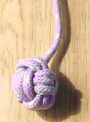
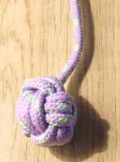
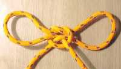
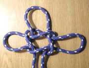
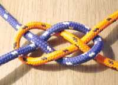
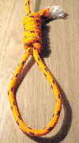
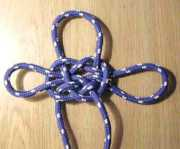
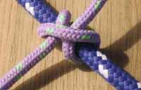
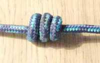

|
|
|
|
|

rodzaje klas wêz³y
zielony |
to ju¿ s¹ ciekawe wênz³y warto zobazcyæ co jeszcze mo¿na zrobiæ z kawa³ka sznurka  
BOSMANKA - mo¿e s³u¿yæ jako ciê¿arek rzutkowy lub jako ozdoba

CIʯAREK RZUTKOWY - s³u¿y jako obci¹¿enie koñca liny lub ozdoba
KAPITAÑSKI - przytrzymywanie dwóch ¿erdek, ³¹czenie beleczek
MASZTOWY - s³u¿y do zak³adania odci¹gów na maszt o dowolnej gruboœci
P£ASKI - eleganckie ³¹czenie dwóch linek
SZUBIENICZNY - dobrze s³u¿y jako pêtla mocno zaciœniêta na ko³ku (i tylko na ko³ku :))
TOPOWY - wszêdzie tam gdzie trzeba dowi¹zaæ dwie rzeczy
WYBLINKA - mo¿e s³u¿yæ do ³¹czenia belek (tratwa, pó³ka, prycz)
BECZKA - wêze³ ozdobny, stosowany na mundurach, zabezpieczenie linki przed wysuwaniem z otworu
!!!!!!!!!!!!!!!!!!!WIÊCEJ W KUTCE (jak zrobie ;)) !!!!!!!!!!!!!!!!!!!!!!!!!!!!!!!!!
|